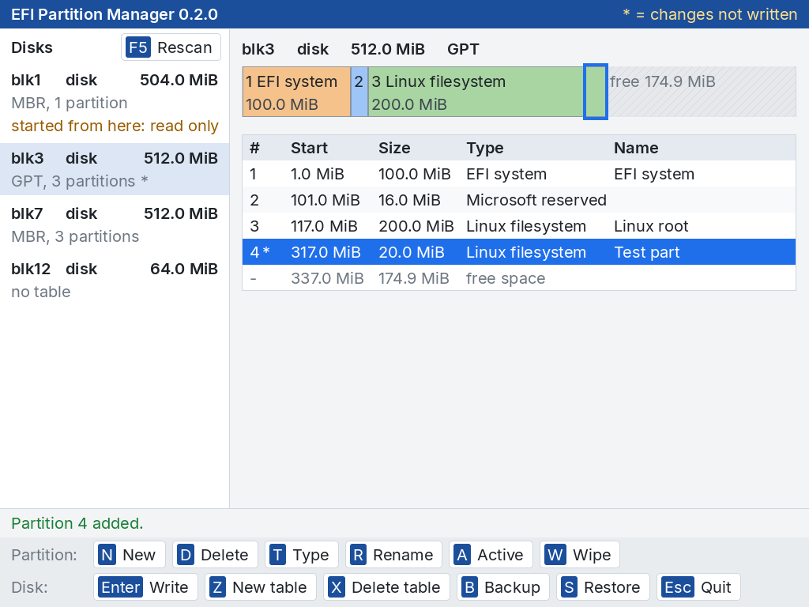

A partition manager for UEFI firmware, in one file: a window used with the mouse or the keyboard, GPT and MBR partition tables, changes shown before they are written, backup and restore, and wipe.

The window, the mouse and every key, writing, backup and restore, wipe, and what the notes about damaged tables mean.
How partmgr reads, changes and writes partition tables, the backup format, the tests, how to extend it.
Why partmgr is the way it is: the design decisions and the history of the project.
The repository on GitHub.